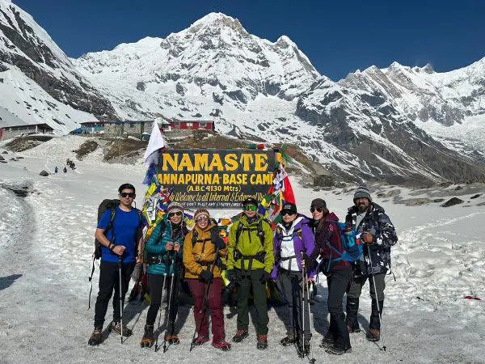

The Annapurna Base Camp (ABC) Trek is one of Nepal most popular trekking routes. It offers stunning views of the Annapurna mountain range, diverse landscapes, and a rich cultural experience along the way.